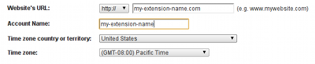
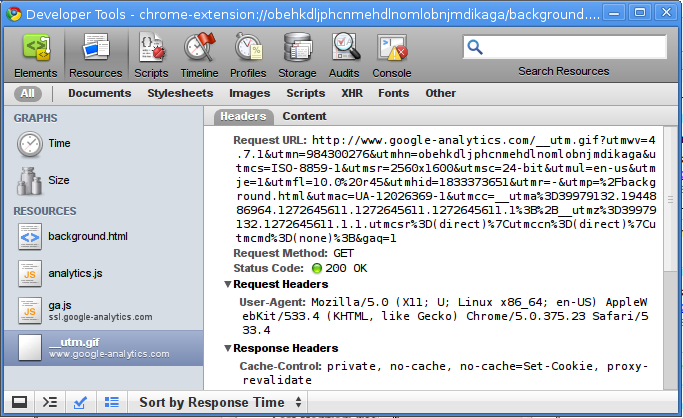
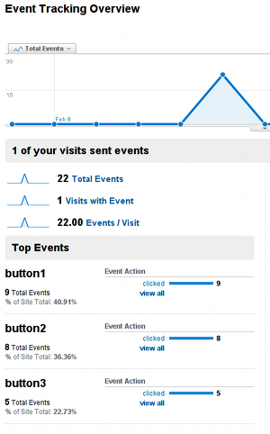

Except as otherwise noted, the content of this page is licensed under the Creative Commons Attribution 3.0 License, and code samples are licensed under the BSD License.
©2011 Google
This tutorial demonstrates using Google Analytics to track the usage of your extension.
This tutorial expects that you have some familiarity writing extensions for Google Chrome. If you need information on how to write an extension, please read the Getting Started tutorial.
You will also need a Google Analytics account set up to track your extension. Note that when setting up the account, you can use any value in the Website's URL field, as your extension will not have an URL of its own.

Also note that Google Analytics requires version 4.0.302.2 of Google Chrome to work correctly. Users with an earlier version of Google Chrome will not show up on your Google Analytics reports. View this FAQ entry to learn how to check which version of Google Chrome is deployed to which platform.
The standard Google Analytics tracking code snippet fetches a file named
ga.js from an SSL protected URL if the current page
was loaded using the https:// protocol. It is strongly
advised to use the SSL protected ga.js in an extension,
but Google Chrome extension
pages are hosted under chrome-extension:// URLs, so the tracking
snippet must be modified slightly to pull ga.js directly from
https://ssl.google-analytics.com/ga.js instead of the default
location.
Below is a modified snippet for the asynchronous tracking API (the modified line is bolded):
(function() {
var ga = document.createElement('script'); ga.type = 'text/javascript'; ga.async = true;
ga.src = 'https://ssl.google-analytics.com/ga.js';
var s = document.getElementsByTagName('script')[0]; s.parentNode.insertBefore(ga, s);
})();
Here is a background page which loads the asynchronous tracking code and tracks a single page view:
<!DOCTYPE html>
<html>
<head>
...
</head>
<body>
<script>
var _gaq = _gaq || [];
_gaq.push(['_setAccount', 'UA-XXXXXXXX-X']);
_gaq.push(['_trackPageview']);
(function() {
var ga = document.createElement('script'); ga.type = 'text/javascript'; ga.async = true;
ga.src = 'https://ssl.google-analytics.com/ga.js';
var s = document.getElementsByTagName('script')[0]; s.parentNode.insertBefore(ga, s);
})();
</script>
...
</body>
</html>
Keep in mind that the string UA-XXXXXXXX-X should be replaced
with your own Google Analytics account number.
The _gaq.push(['_trackPageview']); code will track a single
page view. This code may be used on any page in your extension. When
placed on a background page, it will register a view once per browser
session. When placed on a popup, it will register a view once every time
the popup is opened.
By looking at the page view data for each page in your extension, you can get an idea of how many times your users interact with your extension per browser session:

To ensure that tracking data from your extension is being sent to Google Analytics, you can inspect the pages of your extension in the Developer Tools window (see the debugging tutorial for more information). As the following figure shows, you should see requests for a file named __utm.gif if everything is set up correctly.

By configuring event tracking, you can determine which parts of your extension your users interact with the most. For example, if you have three buttons users may click:
<button>Button 1</button> <button>Button 2</button> <button>Button 3</button>
Write a function that sends click events to Google Analytics:
function trackButton(button_id) {
_gaq.push(['_trackEvent', 'button' + button_id, 'clicked']);
};
And call it when each button is pressed:
<button onclick="trackButton(1);">Button 1</button> <button onclick="trackButton(2);">Button 2</button> <button onclick="trackButton(3);">Button 3</button>
The Google Analytics event tracking overview page will give you metrics regarding how many times each individual button is clicked:

By using this approach, you can see which parts of your extension are under-or-overutilized. This information can help guide decisions about UI redesigns or additional functionality to implement.
For more information about using the event tracking API, see the Google Analytics developer documentation.
A sample extension that uses these techniques is available in the Chromium source tree:
.../examples/tutorials/analytics/